PROCEDURAL CONTENT · SOURCE-FIRST RESEARCH
一种 Recipe，穿过 2D、3D 与游戏。
Kindergrimm 用 JSON Recipe、部件规则和种子生成角色，不依赖运行时文生图模型。最新上游原生覆盖手绘角色、13 类物品、九种历史风格、Voxel / Gloss / Object 3D、动画、群像和三个游戏；我们的研究先固定这些事实，再判断真正增量。
LOCAL HTTP REQUIRED
Production Studio、NPC 工厂和运行场景依赖 ES Modules / Three.js。若入口打不开，请先在仓库根目录运行 .\projects\kindergrimm\scripts\npc-factory.ps1，再打开本地入口。
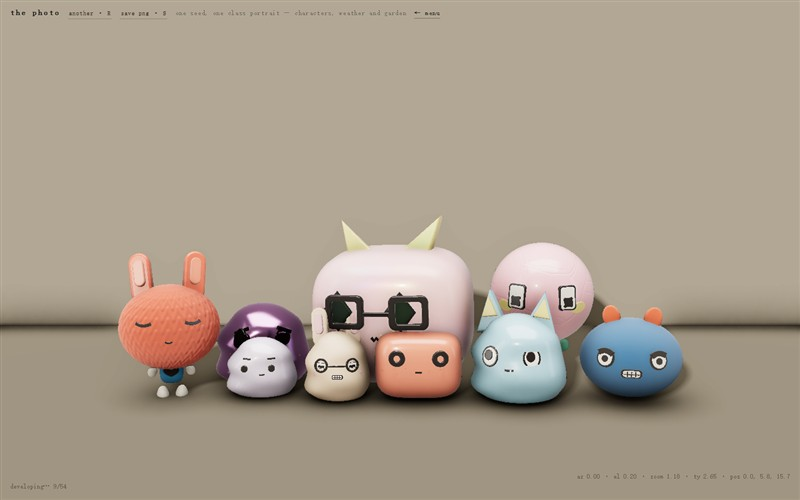
ONE SEED / ONE CLASS PORTRAIT REAL LOCAL CAPTURE
18 HTML PAGES
18 DEMO ROUTES
4 GENERATOR BACKENDS
3 PLAYABLE GAMES
00 / PROGRAM PORTFOLIO
NORTH STAR · DETERMINISTIC GAME ASSET PLATFORM
先固定源库能力，再建设真正增量。
最新上游已经拥有完整物品、九风格和三类 3D 表现。历史交付继续保留，但必须重新标记为上游原生、机制复用、我们的增量、平行重评或应用证明；后续优先解决版本互操作、跨 Backend 身份、导出发布与回归审查。
PROGRAM SOURCE-FIRST AUDIT · EXTENSION ACTIVE
CURRENT SOURCE RE-AUDIT · 5857b1e1
CLASSIFICATION ORIGINAL · EXTENSION · REASSESS
ROUTE SOURCE → MECHANISM → EXTENSION → PROOF
01 Product Frontends 研究站、Pack Authoring、NPC Factory 与 Review Console。
02 Domain Contracts Recipe、Pack、Manifest、迁移、稳定 ID 与错误模型。
03 Generation Core Seed streams、约束、部件图与确定性指纹。
04 Renderer Backends 源库 Drawn / Voxel / Gloss / Object 与经审查的扩展 Renderer。
05 Packaging & Runtime PNG、Sheet、ZIP、缓存、Scene Adapter 与游戏 hooks。
06 Review & Release 50 个 golden recipes、性能、可访问性、来源与发布 Gate。
DONE M0 · Evidence 14 路由、能力矩阵和 v0.6 生产/消费证据。
DONE M1 · Architecture North Star、分层、依赖、阶段和审查门槛。
DONE M2 · Contract Core 5 schemas、纯 validator、4 fixtures 与稳定 issue 已接入运行时。
DONE M3 · Independent 2D 17 类 Core 部件、50 golden recipes、0 上游可见平面与完整生产/消费证据。
DONE M4 · Production UI 创作、比较、审查、6/6 Gate 与 4-file Release Candidate 已通过。
DONE M5 · Runtime SDK 同一 SDK、三场景稳定身份、缓存、state hooks 与事务性导入。
DONE M6 · Release 7 schemas、G0–G7、7-file inventory 与 v1 fingerprint。
DONE V2-M0 · Pack Family Moonharbor 第二 Pack、registry 驱动入口、合同与运行时消费。
DONE V2-M1 · Structural Style Inkcut 独立 Renderer、19 features、50 golden、四路 Studio 与三场景消费。
REASSESS V2-M2 · Parallel Style Experiment 工程交付保留；最新上游已有九个 Style Backend，本成果不再计为源库净新增。
REASSESS V2-M3 · Parallel Asset Experiment 合同与 ZIP/CRC 保留；上游已原生拥有 13 Item Family 和三种 Host。
ACTIVE Source Compatibility · Cross-backend Identity 围绕最新上游建立版本互操作、身份映射和真实增量路线。
01 / 全量演示
从一支铅笔，到三个可玩的世界。
下列画面均来自固定上游提交的本地真实运行截图。点击卡片可进入上游在线演示；本地研究副本提供完全相同的 14 个路由。
02 / 实测证据
不是“代码里写了”，而是实际操作到结果。
验证项 结果 结论
全部路由 14/14 页面打开并截图 正常用户流程未捕获页面错误 确定性 固定 human + graphite + seed 后，两次 recipe hash 都为 3815752950 完整输入固定时可复现 部件锁定 换新 seed 后 skull 参数逐项相同 支持局部保留与其余部分重掷 游戏闭环 评分、战斗奖励、拖拽发射均完成 角色资源不仅展示，也真正参与规则 NPC 资产链 v0.6 12-part visual kit → Recipe / Visual fingerprint → ZIP / Manifest → 三种场景重建 五组十二种 Canvas 部件已进入生产、携带、防篡改与消费闭环；v0.5 精确迁移 Contract Core M2 5 schemas → pure validator → 4 fixtures → stable code/path issues 合同可脱离 Three.js/DOM 验证，再进入 generator 与 renderer 领域复验 Independent Core M3 17 features / 6 groups / 50 golden recipes / 23 authored planes per actor 完整可见角色不调用上游主体构建；12 资产生产、三场景消费、ZIP/CRC 与防篡改闭环通过 桌面 rAF 烟测 3 人游戏约 47 fps；35 人 gloss 群像约 6 fps 小队可用，大规模群像需要优化
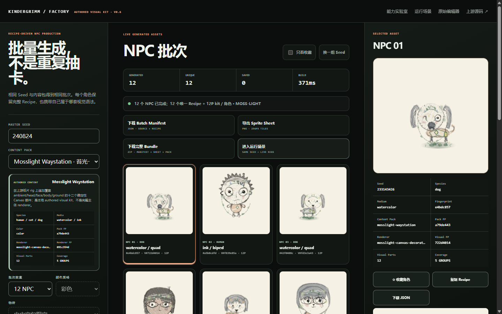
FACTORY / 12 ASSETS 12 parts、5 coverage groups、Visual FP 与 ZIP 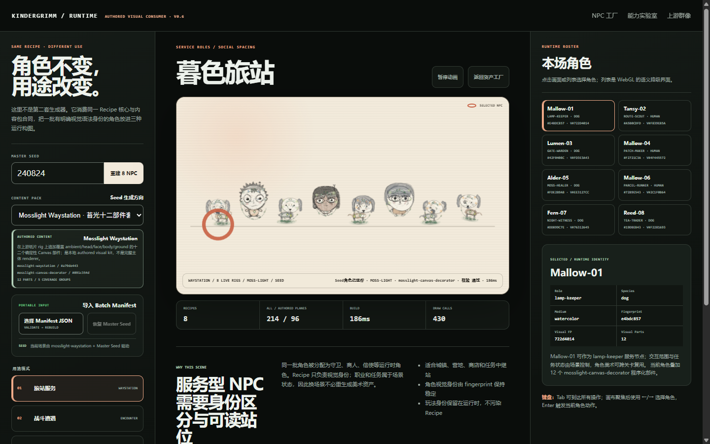
RUNTIME / 8 ACTORS 96 authored planes / 214 total / 430 calls
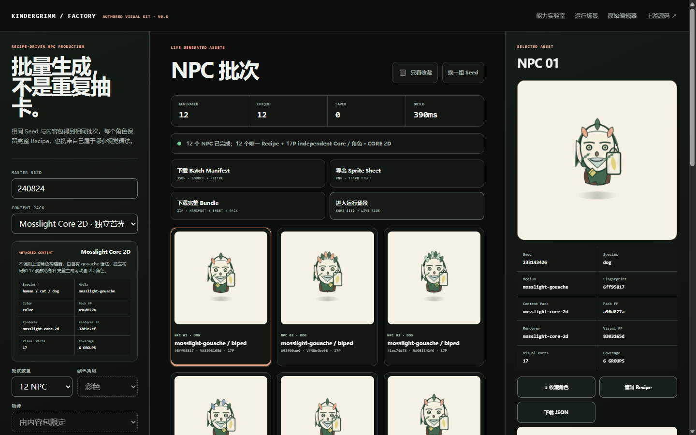
CORE FACTORY / 12 ASSETS 17 features · 6 groups · 23/23 authored · Pack a96d877a 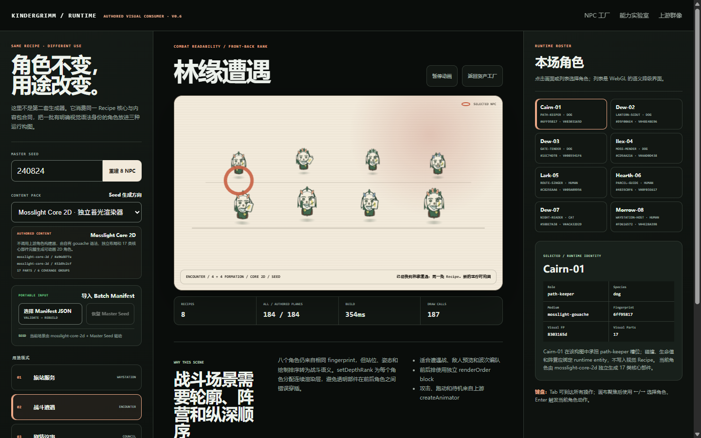
CORE RUNTIME / 8 ACTORS 184 authored / 0 upstream planes · 186–187 calls
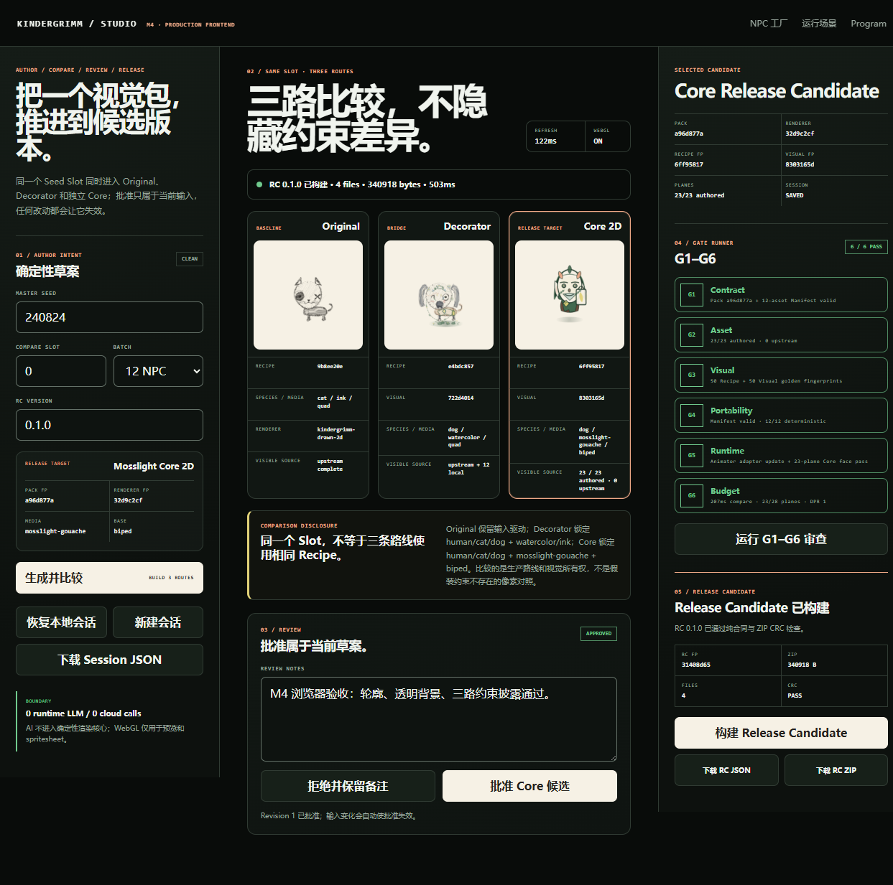
PRODUCTION STUDIO / DESKTOP 3 routes · 6/6 gates · 4-file RC · all CRC valid 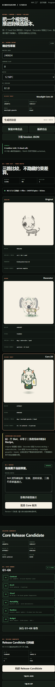
PRODUCTION STUDIO / 390 no horizontal overflow · full keyboard journey
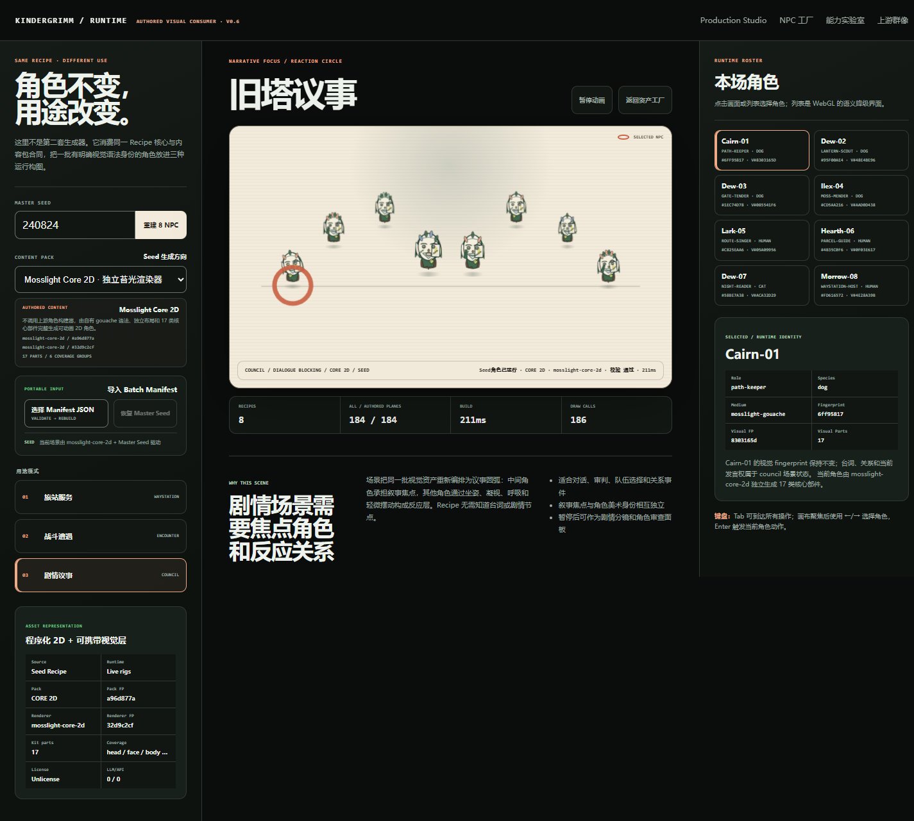
RUNTIME SDK / THREE MODES 8 stable identities · 184 authored · 186 calls · warm 177ms 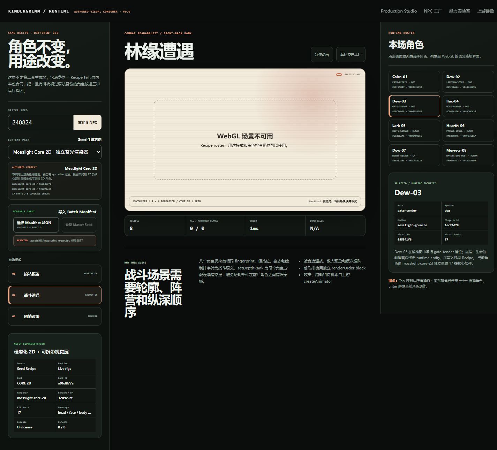
RUNTIME SDK / WEBGL-OFF 8 roster · session/cache/modes · transactional rejection
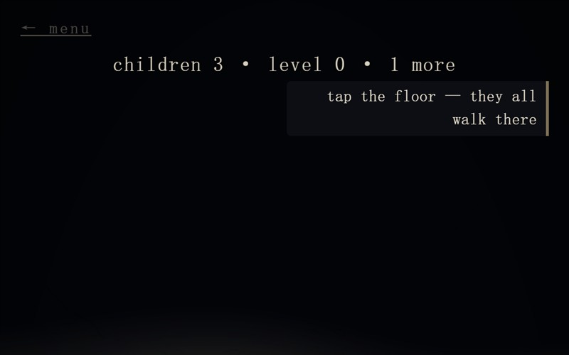
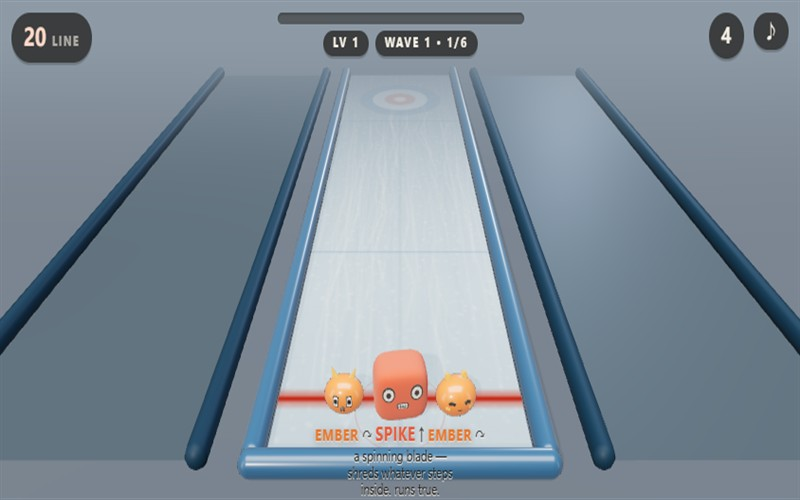
性能结果来自 Chromium、1440×900、DPR 1、Intel UHD / D3D11 的两秒短采样，只适合作为当前机器的相对证据。它不是跨设备正式 benchmark。
03 / 工作原理
稳定的 recipe，把外观、动画和规则连在一起。
01 Recipe 保存 seed、species、media、颜色和每个部件参数。
02 Casting 物种只改变随机概率，不复制整套绘图代码。
03 Layout 集中计算眼睛、身体、地面和共享锚点。
04 Backend 把部件变成笔触、cells、实体 specs 或植物几何。
VISUAL 媒介统一风格 形状只请求 tone / skin / edge，媒介决定铅笔、水彩、油画等具体技法。
MOTION 状态 + 骨骼 脸部预绘状态切换，身体使用 group/bone 变换与姿势交叉淡化。
GAMEPLAY 数值就是画面 剑长决定 reach，灯笼大小决定 light radius，外形与玩法共用参数。
04 / 本地复现
上游保持纯净，研究层独立运行。
git submodule update --init projects/kindergrimm/upstream
.\projects\kindergrimm\scripts\demo.ps1 list
.\projects\kindergrimm\scripts\demo.ps1 serve
# open http://127.0.0.1:8137/
.\projects\kindergrimm\scripts\npc-factory.ps1
# open https://yydshly.github.io/0823_githubcode_study/projects/kindergrimm/npc-factory/
# then export ZIP / Manifest and import JSON in npc-scenarios/当前固定提交为 5857b1e1cae2713d6714ad7dd7f89626bb242f0f。上游使用 Unlicense；我们的截图、能力矩阵、NPC 资产工厂、ZIP 与 Manifest 消费层均保存在子模块之外。
FIRST RESEARCH ROUND COMPLETE · ARCHIVED ON DEMAND
2D、3D 与游戏场景素材能力已经验证；后续由具体叙事触发。
研究已经回答能力、原理、驱动方式、消费场景和扩展边界。Kindergrimm 可作为确定性的童话风格素材来源，但不是完整游戏或叙事引擎。没有明确故事、载体、镜头和动画深度之前，不再增加泛化 Demo；具体叙事确定后，再以一个基准故事建立同源素材、表情、动作与镜头时间轴。